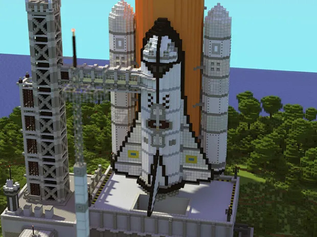
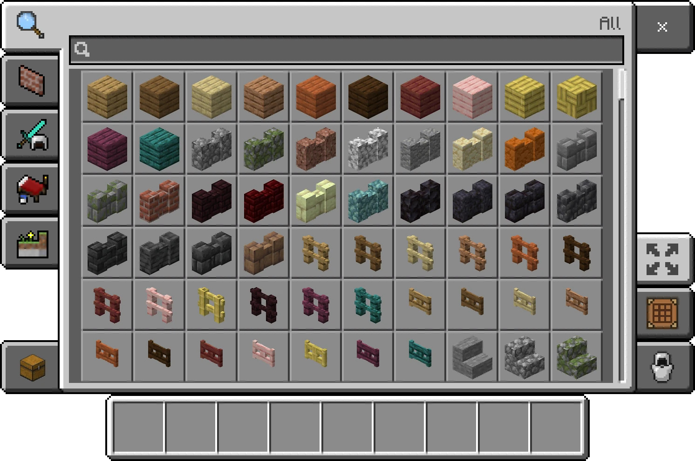
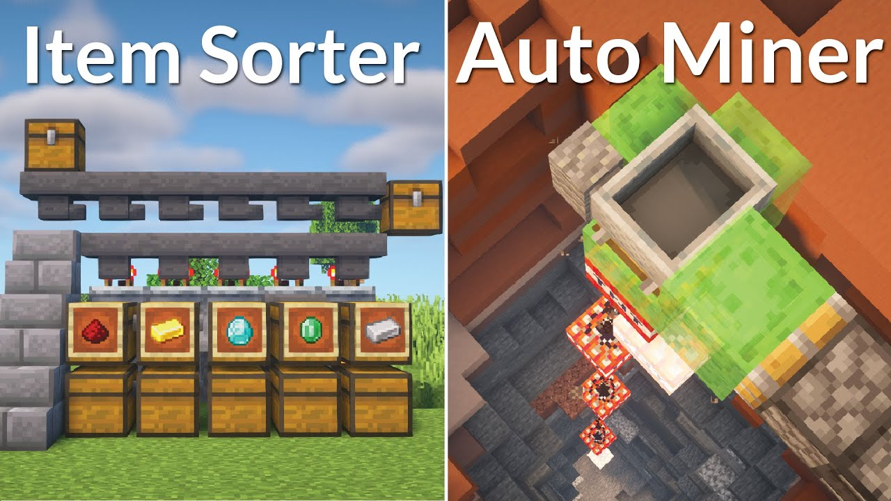

Exploration and Building
Minecraft is renowned for its vast open world and limitless creative potential. Players can explore diverse biomes, mine resources, and build intricate structures using various blocks and materials.
Creative Mode
In Creative mode, players have unlimited resources and can fly, enabling them to build freely without constraints. This mode is ideal for creative projects and building impressive landscapes and structures.
Redstone Mechanics
Minecraft features a unique redstone system that allows players to create complex circuits, mechanisms, and automated devices. This feature adds depth to gameplay and fosters engineering and problem-solving skills.
